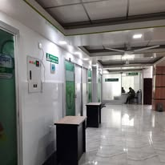

ডায়াগনস্টিক
১০০% আধুনিক ডিজিটাল ডায়াগনস্টিক ল্যাব
আমরা সর্বোচ্চ নির্ভুল টেস্ট রিপোর্ট নিশ্চিত করতে জাপানি ও ইউরোপীয় প্রযুক্তির স্বয়ংক্রিয় প্যাথলজি ল্যাব ব্যবহার করি। রক্ত পরীক্ষা, বায়োকেমিস্ট্রি, ইমিউনোলজি ও হরমোন টেস্টের দ্রুত রিপোর্ট প্রদান করা হয়।
- কম খরচে ডায়াগনস্টিক টেস্ট
- অভিজ্ঞ ল্যাব টেকনোলজিস্ট দ্বারা চালিত
- এক্সপার্ট প্যাথলজিস্ট দ্বারা রিপোর্ট যাচাই
- ডিজিটাল এক্স-রে ও ৪ডি আল্ট্রাসনোগ্রাফি
অপারেশন
৩টি আধুনিক ও জীবাণুমুক্ত অপারেশন থিয়েটার (OT)
জটিল ও সাধারণ যেকোনো অপারেশনের জন্য আমাদের হাসপাতালে রয়েছে ৩টি শীতাতপ নিয়ন্ত্রিত আধুনিক অপারেশন থিয়েটার। সি-আর্ম মেশিন, অত্যাধুনিক লাইটিং ও মনিটরিং সিস্টেমের মাধ্যমে নিরাপদে সার্জারি সম্পন্ন হয়।
- ১০০% জীবাণুমুক্ত স্টেরিলাইজড পরিবেশ
- গাইনি, অর্থোপেডিক ও জেনারেল সার্জারি সুবিধা
- অভিজ্ঞ অ্যানেস্থেসিওলজিস্ট উপস্থিত


জরুরি
২৪/৭ জরুরি মেডিকেল বিভাগ ও অ্যাম্বুলেন্স
জরুরি রোগী ভর্তির জন্য দিন-রাত ২৪ ঘণ্টাই মেডিকেল অফিসার ও নার্সিং স্টাফ উপস্থিত থাকেন। হঠাৎ অসুস্থতা বা দুর্ঘটনার সাথে সাথে চিকিৎসাসেবা শুরু করা হয়।
- ২৪ ঘণ্টা নিজস্ব ফার্মেসি সেবা
- এসি/নন-এসি কেবিন ও ক্যানটিন সুবিধা
- নিজস্ব অ্যাম্বুলেন্স সার্ভিস
- ICU/NICU ২৪ ঘণ্টা প্রস্তুত